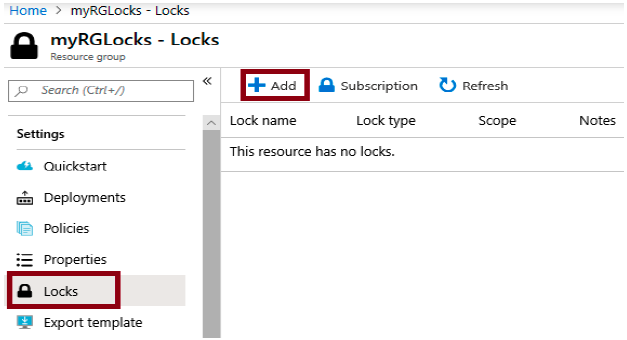
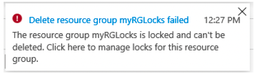
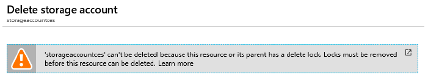
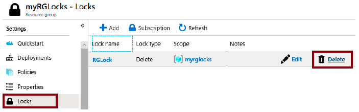

Lab 4: Manage resource locks (5 min)
In this Lab, we will add a lock to the resource group and test deleting the resource group. Locks can be applied in a subscription to resource groups, or individual resources to prevent accidental deletion or modification of critical resources.
Task 1: Add a Lock to the resource group and test deletion
In this task, we will add a resource lock to the resource group and test deleting the resource group.
1 - Sign in to the Azure portal.
2 - In the Azure portal, navigate to the resource group myRGLocks.
3 - You can apply a lock to a subscription, resource group, or individual resource to prevent accidental deletion or modification of critical resources.
4 - In the Settings section, click Locks, and then click + Add.

5 - Configure the new lock. When you are done click OK.
| Setting | Value |
|---|---|
| Lock name | "RGLock" |
| Lock type | Excluir |
6 - Click Overview and click Delete resource group. Type the name of the resource group and click OK. You receive an error message stating the resource group is locked and can't be deleted.

Task 2: Test deleting a member of the resource group
In this task, we will test if the resource lock protects a storage account in the resource group.
1 - From the All services blade, search for and select Storage accounts, and then click + Add, + Create, or + New.
2 - On the Storage Accounts page + Add, + New, + Create blade, fill in the following information (replace xxxx in the name of the storage account with letters and digits such that the name is globally unique). Leave the defaults for everything else.
| Setting | Value |
|---|---|
| Subscription | Select your subscription |
| Resource group | myRGLocks |
| Storage account name | storageaccountxxxx |
| Location | (EUA) Leste dos EUA |
| Performance | Standard |
| Account kind | StorageV2 (general purpose v2) |
| Replication | Locally redundant storage (LRS) |
| Access tier (default) | Hot |
3 - Click Review + Create to review your storage account settings and allow Azure to validate the configuration.
4 - Once validated, click Create. Wait for the notification that the account was successfully created.
5 - Wait for the notification that the storage account was successfully created.
6 - Access your new storage account and from the Overview pane, click Delete. You receive an error message stating the resource or its parent has a delete lock.

Note: Although we did not create a lock specifically for the storage account, we did create a lock at the resource group level, which contains the storage account. As such, this parent level lock prevents us from deleting the resource and the storage account inherits the lock from the parent.
Task 3: Remove the resource lock
In this task, we will remove the resource lock and test.
1 - Return to the myRGLocks-XXXXXXXX resource group blade and, in the Settings section, click Locks.
2 - Click Delete link to the far right of the myRGLocks-XXXXXXXX entry, to the right of Edit.

3 - Return to the storage account blade and confirm you can now delete the resource.
Congratulations! You created a resource group, added a lock to resource group and tested deletion, tested deleting a resource in the resource group, and removed the resource lock.
Note: To avoid additional costs, you can optionally remove this resource group. Search for resource groups, click your resource group, and then click Delete resource group. Verify the name of the resource group and then click Delete. Monitor the Notifications to see how the delete is proceeding.